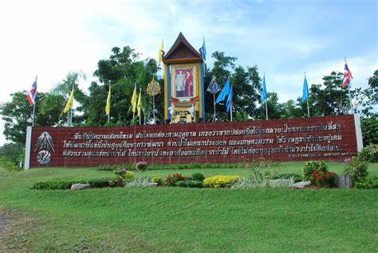

ตั้งอยู่บริเวณตำบลสามพระยา อำเภอชะอำ จังหวัดเพชรบุรี ในอดีตพื้นที่แห่งนี้มีทรัพยากรธรรมชาติสมบูรณ์ มีสัตว์ป่าอาศัยอยู่มาก โดยเฉพาะอย่างยิ่งเนื้อทราย แต่เพราะผลจากการที่ราษฎรเข้ามาทำกิน บุกรุกป่า โดยเฉพาะการทำไร่สับปะรด และการใช้สารเคมีอย่างผิดวิธี ส่งผลให้ระบบนิเวศเสื่อมโทรมอย่างรวดเร็ว
จนเมื่อพระบาทสมเด็จพระปรมินทรมหาภูมิพลอดุลยเดช มีพระราชดำริให้จัดตั้งศูนย์แห่งนี้ เพื่อศึกษา ค้นคว้า วิจัย เพาะเลี้ยงและขยายพันธุ์สัตว์ป่า และฟื้นฟูสภาพป่าที่เสื่อมโทรม รวมถึงยังเป็นสถานที่ศึกษาหาความรู้ด้านการอนุรักษ์ทรัพยากรป่าไม้และสัตว์ป่าของนักเรียน นิสิต และประชาชนทั่วไปที่สนใจอีกด้วย
